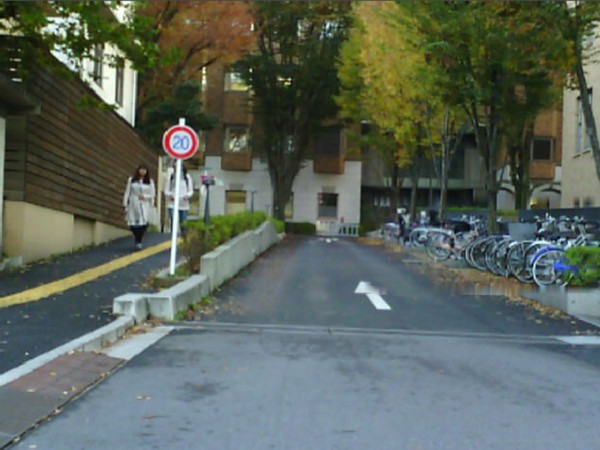
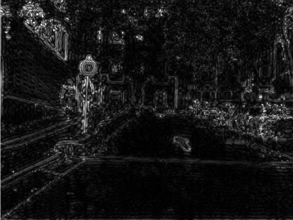
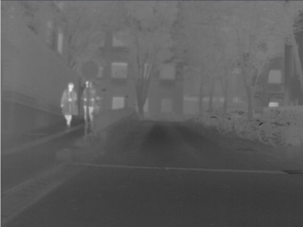
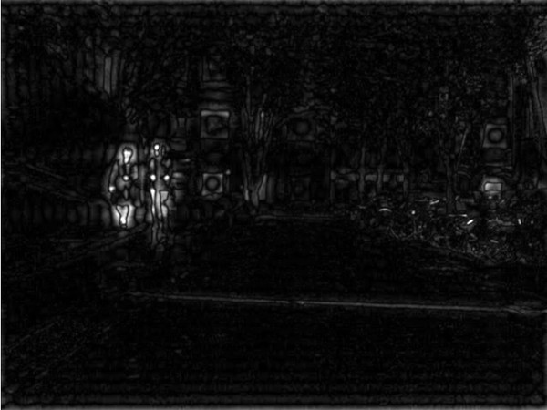

RGB


Thermal
bikes
people
people
bikes
MFNet · mIoU
RGB-T segmentation · ResNet-152
EAEFNet
58.9
previous best
SGFNet
60.1
+1.2
also best on PST900: 85.4 mIoU (prev. 84.4)
Fuse the high frequencies
of RGB + thermal